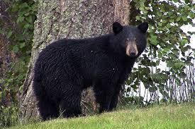

Régime alimentaire
Les ours noirs sont omnivores : les végétaux représentent 75 % de leur alimentation. Ils mangent des graminées, des herbes, des fruits (noisettes, noix, baies, pignons, fruits d’églantiers, pommes …), des glands et des faînes. Il mange également, de temps en temps, des insectes, des larves, de poissons et de charognes. Il lui arrive de chasser des mammifères. Ils sont opportunistes et mangent parfois dans des poubelles et d'autres restes de nourriture laissés dans des campements.
